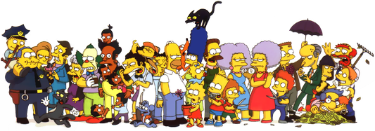

While we don't usually find memorable laughs in
For instance, most of the characters in The Simpsons have distinctive laughs. If we’re familiar with the show, we can recall how most of the cast laughs:
(and so on)
By contrast, we can take any of our favorite live action shows—and probably find that we remember fewer consistent and less distinctive cast laughs.

We relate to characters with coherent, vivid spectator humor profiles. This is one reason we often find characters in animated comedies to be emotionally responsive and relatable, while sitcome characters often feel flat by comparison.
Consider:
Voice actors have a lot of leeway to create distinctive laughs—since, unlike live-action actors, voice actors don't have to worry about how they look while making laugh-like noises! It doesn't matter how much or how little they look like they're actually laughing.
Even though we interpret characters in animated spectator entertainment as
This is one of the reasons we can remember so many distinctive laugh-like noises for many animated characters, but not live-action characters. Voice actors have the practical leeway to create distinctive sounds for their characters.
And since laughs are often the most memorable, relatable aspects of someone, we tend to animated characters memorable and relatable in ways live-action characters aren't.
The presence of nuanced and varied laugh-like voises give animated shows a feeling of emotional finesse and relatability that's often lacking in film.
In the show above, characters briefly have a large OK which allows them to share large mistakes to generate humor. As they do so, they feel
Since animated shows have an easier time conveying intensity, duration, and lean, we experience animated shows as having emotional depth. A live action show struggles to convincingly display nuanced, intense humor like this—making the emotional activity in live action shows feel flat.
Consider:
It's harder to do scenes with shared laughter in live-action shows, despite shared laughter often being emotional focal points.
Live-action actors have less leeway to establish memorable noises for their characters' laugh—and then are subject to the demands of filming, like laughing in a way that looks convincing on camera, in whatever set they're put on.
This allows a show like
(and so on)
But even though these humor tells are
Even if a scene does come to mind, we’ll probably either not really remember the sound of the laugh itself—or remember the sound as not particularly convincing. That’s because it’s hard to act any laughter on command—let alone create a signature laugh for a live-action character!
This is one reason live-action characters don't always translate well to animation, and vice versa. An animated character won't have an established laugh, just like an animated character can't translate their laugh into live-action.